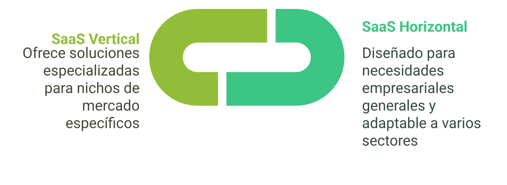

Apuntes
ndice
Contenidos
Introducción
En este tema nos centraremos en los conceptos claves y las tecnologías de computación en la nube. El objetivo principal del tema no es la profundización técnica en la implementación de estas tecnologías, sino comprender su finalidad y cómo pueden utilizarse para impulsar la transformación digital en diversos sectores productivos. Se abordará el concepto de nube, se explorará su historia, sus diferentes modelos de implementación (pública, privada, híbrida, multinube), los modelos de servicio (IaaS, PaaS, SaaS, XaaS) y su impacto en la rentabilidad empresarial. Finalmente, introduce modelos de computación complementarios como Edge Computing, Fog Computing y Mist Computing.
Contexto de la Computación en la Nube
Orígenes
La computación en la nube tiene sus orígenes en los años 50 con los mainframes y el procesamiento en tiempo compartido, donde grandes computadoras centrales permitían el acceso simultáneo e independiente a varios usuarios. Desde entonces la irrupción de diferentes tecnologías nos ha conducido hasta la nube actual.
Hoy en día, la computación en la nube es esencial para la transformación digital.
Los mainframes son grandes computadoras centrales diseñadas para procesar enormes volúmenes de datos y ejecutar múltiples tareas de manera simultánea. Proporcionaban un entorno centralizado que permitía a varios usuarios acceder de manera simultánea e independiente.
Evolución de la Computación en la Nube
-
Años 50: Mainframes y Procesamiento en Tiempo Compartido
- Los mainframes permitían a múltiples usuarios acceder simultáneamente a una única computadora central.
- Introducción del concepto de procesamiento en tiempo compartido, que sentó las bases para la virtualización y el uso compartido de recursos.
-
Años 70: Virtualización
- La virtualización permitió dividir los recursos físicos en múltiples entornos virtuales.
- Empresas como IBM lideraron el desarrollo de tecnologías de virtualización, fundamentales para la computación en la nube.
-
Años 80: Redes y Conectividad
- La expansión de las redes y la conectividad global (como ARPANET, precursor de internet) facilitó el acceso remoto a recursos compartidos.
- Se popularizó el concepto de cliente-servidor, que permitió a los usuarios interactuar con servidores remotos.
-
Años 90: Computación Distribuida
- La computación distribuida y el surgimiento de internet comercial impulsaron la idea de servicios accesibles desde cualquier lugar.
- Empresas como Salesforce (1999) introdujeron el modelo de Software como Servicio (SaaS).
-
2000-2006: Nacimiento de la Nube Moderna
- En 2006, Amazon Web Services (AWS) lanzó servicios como EC2 y S3, marcando el inicio de la computación en la nube moderna.
- Se consolidaron los modelos de servicio: IaaS, PaaS y SaaS.
-
2010 en adelante: Expansión y Diversificación
- Microsoft Azure (2010) y Google Cloud Platform (2011) ampliaron las opciones de servicios en la nube.
- Surgieron modelos híbridos y multinube, así como tecnologías complementarias como Edge Computing, Fog Computing y Mist Computing.

Cronología resumida
| Año | Hito Principal |
|---|---|
| 1950s | Mainframes y procesamiento en tiempo compartido. |
| 1970s | Virtualización y avances en hardware. |
| 1980s | Redes globales y modelo cliente-servidor. |
| 1990s | SaaS y computación distribuida. |
| 2006 | Lanzamiento de AWS, inicio de la nube moderna. |
| 2010-2011 | Aparición de Microsoft Azure y Google Cloud. |
| Actualidad | Modelos híbridos, multinube, Edge, Fog y Mist Computing. |
Computación en la Nube, beneficios e incovenientes
La computación en la nube o Cloud Computing consiste en ofrecer servicios de hardware y software a través de internet, eliminando la necesidad de poseer o gestionar infraestructura física propia. En esencia, permite a los usuarios acceder a recursos tecnológicos de manera remota, utilizando internet como medio principal. El término nube se utiliza para representar la disponibilidad de estos recursos desde cualquier lugar con conexión.

Beneficios de la Computación en la Nube
La siguiente tabla describe los principales beneficios o ventajas de la computación en la nube.
| Beneficios | Descripción |
|---|---|
| Acceso remoto | Permite trabajar desde cualquier lugar con conexión a internet. |
| Reducción de costes | Elimina la necesidad de grandes inversiones iniciales en infraestructura física. |
| Escalabilidad | Los recursos pueden ajustarse dinámicamente según las necesidades. |
| Modelo de pago por uso | Los usuarios solo pagan por los recursos que consumen. |
| Mantenimiento simplificado | Los proveedores de nube se encargan de actualizaciones y soporte técnico. |
| Sostenibilidad | Facilita modelos de negocio más ecológicos y eficientes. |
| Innovación | Libera a las empresas de tareas operativas, permitiéndoles centrarse en su actividad principal. |
Inconvenientes de la Computación en la Nube
La siguiente tabla describe las principales desventajas o inconvenientes de la computación en la nube.
| Inconvenientes | Descripción |
|---|---|
| Dependencia de internet | Requiere una conexión estable para acceder a los servicios. |
| Privacidad y seguridad | Los datos sensibles pueden estar expuestos a riesgos si no se gestionan adecuadamente. |
| Costes variables | Los costes pueden ser difíciles de prever debido al modelo de pago por uso. |
| Dependencia del proveedor | Cambiar de proveedor puede ser complejo y costoso. |
| Limitaciones de personalización | Algunos servicios no permiten adaptaciones específicas a las necesidades del cliente. |
| Latencia | Puede haber retrasos en el acceso a datos o servicios en ciertas ubicaciones. |
Modelos de Implementación de la Nube
Los modelos de implementación en la nube definen cómo se estructuran y gestionan los recursos tecnológicos en función de las necesidades de las organizaciones. Cada modelo ofrece diferentes niveles de control, flexibilidad y seguridad, permitiendo a las empresas elegir la opción que mejor se adapte a sus objetivos estratégicos y operativos. A continuación, se describen los principales modelos de implementación, destacando sus características, ventajas y casos de uso.

Nube Pública
La nube pública es un modelo de implementación en el que los recursos tecnológicos, como servidores, almacenamiento y aplicaciones, son gestionados por un proveedor externo y compartidos entre múltiples usuarios a través de internet.
Características
- Acceso desde cualquier ubicación: Los usuarios pueden acceder a los recursos desde cualquier lugar con conexión a internet.
- Despliegue rápido: Los servicios están disponibles de forma inmediata, sin necesidad de configurar infraestructura física.
- Alta escalabilidad: Los recursos pueden ajustarse dinámicamente según las necesidades.
- Modelo de pago por uso: Los usuarios solo pagan por los recursos que consumen.
- Optimización de costes: No requiere inversión inicial en infraestructura.
- Mantenimiento y actualizaciones: A cargo del proveedor.
Proveedores principales
- Amazon Web Services (AWS)
- Microsoft Azure
- Google Cloud Platform

Nube Privada
La nube privada es un modelo en el que la infraestructura está dedicada exclusivamente a una única organización, proporcionando mayor control y personalización.
Características
- Control total: La organización tiene control completo sobre la gestión de los recursos.
- Cumplimiento normativo: Ideal para sectores con requisitos estrictos de seguridad y normativas.
- Personalización: Permite adaptar la infraestructura a necesidades específicas.
Limitaciones
- Costes elevados: La organización asume la responsabilidad financiera de la adquisición, mantenimiento y personal.
- Gestión compleja: Requiere personal especializado para su administración.
Proveedores principales
- VMware
- OpenStack
Nube Híbrida
La nube híbrida combina recursos de nubes públicas y privadas, permitiendo la transferencia de datos y aplicaciones entre ellas.
Características
- Flexibilidad: Permite mantener información sensible en la nube privada y aprovechar la escalabilidad de la nube pública.
- Carga de trabajo equilibrada: Optimiza el uso de recursos según las necesidades.
- Costes optimizados: Combina los beneficios de ambos modelos.
Proveedores principales
- Microsoft Azure
- Amazon Web Services (AWS)

Multinube
La multinube utiliza servicios de diferentes proveedores, ya sean públicos o privados, para evitar la dependencia de un único proveedor.
Características
- Diversidad de servicios: Permite seleccionar servicios específicos según las necesidades.
- Reducción de riesgos: Minimiza la dependencia de un único proveedor.
- Optimización de costes: Aprovecha las fortalezas de diferentes proveedores.
Proveedores principales
- AWS
- Google Cloud Platform
- Microsoft Azure

Modelos o niveles de Servicio en la Nube
Definen la relación entre proveedores y usuarios, así como la gestión de recursos y responsabilidades. A continuación se describen los diferentes modelos. Tradicionalmente se han considerado tres niveles de servicio en la nube: Infraestructura como Servicio (IaaS), Plataforma como Servicio (PaaS) y Software como Servicio (SaaA). Actualmente también se considera el nivel Todo como Servicio (XaaS) que es una evolución de los otros tres.
Infraestructura como Servicio (IaaS)
El proveedor gestiona la infraestructura (servidores, almacenamiento, redes, virtualización), mientras que el usuario gestiona el sistema operativo, software y datos.
Características
- Virtualización de recursos.
- Escalabilidad dinámica.
- Control total sobre el sistema operativo y aplicaciones.
- Modelo de pago por uso.

Limitaciones
- Gestión compleja.
- Escalabilidad no completamente automática.
- Coste variable dificulta la planificación financiera.
Plataforma como Servicio (PaaS)
El proveedor gestiona la infraestructura, el sistema operativo y el software intermedio, dejando al usuario la gestión de aplicaciones y datos. Es especialmente indicado para el desarrollo de aplicaciones.
Características
- Entorno de desarrollo completo (lenguajes, bases de datos).
- Automatización del despliegue.
- Escalabilidad automática.
- Gestión simplificada de recursos.

Limitaciones
- Personalización de infraestructura reducida.
- Dependencia del proveedor.
Software como Servicio (SaaS)
El proveedor gestiona todas las capas (infraestructura, plataforma, aplicaciones), y el usuario accede a las aplicaciones a través de internet.
Características
- Acceso remoto.
- Gestión centralizada por el proveedor (mantenimiento, actualizaciones, seguridad).
- Modelo de pago por suscripción.
- Escalabilidad.
Limitaciones
- Personalización limitada.
- Dependencia del proveedor.
- Posibles preocupaciones sobre la privacidad de datos sensibles.
Clasificación
-
Por tipo de cliente:
- SaaS B2B (para empresas).
- SaaS B2C (para consumidores).
-
Por diseño:
- SaaS Horizontal: Genérico, adaptable a múltiples sectores (ej., Microsoft 365, Google Workspace).
- SaaS Vertical: Para nichos de mercado específicos (ej., Viva Assistance para sanidad).

Todo como Servicio (XaaS)
Engloba una amplia variedad de soluciones ofrecidas a través de internet, representando la evolución de SaaS, PaaS e IaaS.
Características
- Flexibilidad.
- Escalabilidad.
- Eficiencia de costes (sin grandes inversiones iniciales).
- Acceso remoto.

Desafíos
- Dependencia de la conexión a internet.
- Elección de proveedores de confianza.
- Gestión de múltiples proveedores.
Relación entre los modelos de servicio
Los niveles de servicio del Cloud Computing están organizados de manera jerárquica, donde cada nivel depende del anterior para funcionar, y juntos forman un ecosistema completo que permite a las empresas elegir el nivel de servicio que mejor se adapte a sus necesidades.
Esta relación entre los diferentes niveles puede describirse como una jerarquía interdependiente, donde cada nivel se construye sobre el anterior y ofrece un mayor nivel de abstracción para el usuario. A continuación, se detalla esta relación:
Descripción de la relación
-
Infraestructura como Servicio (IaaS) - La base
- Función: Proporciona los cimientos tecnológicos, como servidores, almacenamiento, redes y virtualización.
- Relación con los otros niveles:
- Es el nivel más bajo y esencial, ya que tanto PaaS como SaaS dependen de la infraestructura proporcionada por IaaS.
- Sin IaaS, no sería posible construir plataformas ni ofrecer aplicaciones.
-
Plataforma como Servicio (PaaS) - Nivel intermedio
- Función: Proporciona un entorno para desarrollar, probar y desplegar aplicaciones, incluyendo herramientas de desarrollo, bases de datos y middleware.
- Relación con los otros niveles:
- Se construye sobre IaaS, utilizando la infraestructura subyacente para ofrecer un entorno de desarrollo listo para usar.
- Sirve como base para SaaS, ya que las aplicaciones ofrecidas como SaaS suelen desarrollarse y gestionarse en plataformas PaaS.
-
Software como Servicio (SaaS) - La cima
- Función: Proporciona aplicaciones listas para usar a través de internet, como herramientas de productividad, gestión empresarial o colaboración.
- Relación con los otros niveles:
- Depende de PaaS para el desarrollo y mantenimiento de las aplicaciones.
- Indirectamente, depende de IaaS para la infraestructura que soporta tanto las plataformas como las aplicaciones.
Relación General
-
Interdependencia: Cada nivel depende del anterior para funcionar. IaaS proporciona la infraestructura, PaaS utiliza esa infraestructura para ofrecer un entorno de desarrollo, y SaaS utiliza las plataformas para ofrecer aplicaciones listas para el usuario final.
-
Abstracción creciente: A medida que subimos en la jerarquía, el nivel de abstracción aumenta. Los usuarios finales de SaaS no necesitan preocuparse por la infraestructura ni las plataformas subyacentes, mientras que los usuarios de IaaS tienen un control más granular pero también más responsabilidades.
-
Control vs. Simplicidad:
- En IaaS, el usuario tiene más control sobre los recursos, pero también más tareas de gestión.
- En SaaS, el usuario tiene menos control, pero la simplicidad y facilidad de uso son mayores.
El siguiente diagrama ilustra la relación jerárquica entre los niveles de servicio en la nube, las prestaciones y los perfiles de los usuario habituales de estos.

Responsabilidad de Gestión de Recursos en la Nube
La responsabilidad de gestionar los recursos en la nube varía según el nivel de servicio (IaaS, PaaS, SaaS). A continuación, se detalla cómo se distribuyen las responsabilidades entre el proveedor y el usuario en cada modelo:
| Nivel de Servicio | Responsabilidad del Proveedor | Responsabilidad del Usuario |
|---|---|---|
| Infraestructura como Servicio (IaaS) | Infraestructura física, virtualización, redes, almacenamiento. | Sistema operativo, middleware, aplicaciones, datos. |
| Plataforma como Servicio (PaaS) | Infraestructura, sistema operativo, middleware, herramientas de desarrollo, bases de datos. | Aplicaciones, datos. |
| Software como Servicio (SaaS) | Infraestructura, sistema operativo, middleware, aplicaciones, mantenimiento, actualizaciones, seguridad. | Uso de la aplicación, configuración básica, gestión de datos propios. |

Características
- Control total: La organización tiene pleno control sobre la infraestructura y los datos.
- Cumplimiento normativo: Ideal para sectores con estrictos requisitos de seguridad y privacidad.
- Personalización: Permite adaptar los sistemas a las necesidades específicas del negocio.
Limitaciones
- Costes elevados: Requiere inversiones iniciales significativas en hardware, software y personal especializado.
- Escalabilidad limitada: La expansión de recursos puede ser lenta y costosa.
- Mantenimiento complejo: La organización debe gestionar actualizaciones, soporte técnico y seguridad.
Comparativa con la Nube
| Aspecto | On-Premises | Computación en la Nube |
|---|---|---|
| Inversión inicial | Alta (hardware y software propios). | Baja (modelo de pago por uso). |
| Escalabilidad | Limitada y lenta. | Dinámica y rápida. |
| Mantenimiento | A cargo de la organización. | A cargo del proveedor. |
| Acceso remoto | Limitado a la infraestructura interna. | Disponible desde cualquier lugar. |
Anteriormente a la aparición de las tecnologías de computación en la nube tanto el hardware como el software tenía que ser gestionado por cada organización. Este modelo de servicio de computación se denomina On-Premises.
El modelo On-Premises sigue siendo relevante en sectores donde la seguridad, la privacidad y el control total son prioritarios, aunque la computación en la nube ha ganado terreno por su flexibilidad y eficiencia.
El modelo On-Premises se refiere a la gestión y operación de infraestructura tecnológica dentro de las instalaciones físicas de una organización. En este enfoque, la empresa es responsable de adquirir, instalar, configurar y mantener tanto el hardware como el software necesarios para sus operaciones.
Uso de los Diferentes Modelos de Nube
Los modelos de nube (IaaS, PaaS, SaaS) ofrecen soluciones adaptadas a diferentes necesidades empresariales, desde la gestión de infraestructura hasta el desarrollo y uso de aplicaciones. Cada modelo tiene aplicaciones específicas que permiten a las organizaciones optimizar recursos, reducir costes y mejorar la eficiencia operativa. A continuación, se describen ejemplos prácticos de cómo estos modelos pueden ser utilizados en distintos sectores.
Aplicaciones de los Modelos de Nube
Infraestructura como Servicio (IaaS)
Permite gestionar infraestructura sin necesidad de invertir en hardware propio.
- Aplicaciones:
- Servicios de computación: Arquitectura e ingeniería (software de diseño 3D).
- Almacenamiento: Sanidad (historiales médicos electrónicos).
- Copia de seguridad: Financiero (protección de datos críticos).
- Redes: Educativo (plataformas de aprendizaje en línea).
Plataforma como Servicio (PaaS)
Facilita el desarrollo, despliegue y mantenimiento de aplicaciones.
- Aplicaciones:
- Gestión del ciclo de vida de aplicaciones: Comercio electrónico (actualización de plataformas).
- Portales de aplicaciones: Turístico (portales personalizados).
- Plataformas de desarrollo sin servidor: Financiero (procesamiento de pagos en línea).

Software como Servicio (SaaS)
Permite acceder a aplicaciones listas para usar a través de la nube.
- Aplicaciones:
- Comunicación y colaboración: Educativo (Microsoft Teams, Google Workspace).
- Paquetes de software de oficina: Microsoft 365, Google Workspace.
- Gestión empresarial: Industrial (SAP Business One), marketing (HubSpot), comercio electrónico (Mailchimp), gestión de proyectos (Microsoft Project, Trello).
Modelos de Computación Complementarios a la Nube Tradicional
Los modelos complementarios a la nube tradicional, como Edge Computing, Fog Computing y Mist Computing, surgen para abordar desafíos específicos relacionados con la latencia, la conectividad y el procesamiento de datos en tiempo real. Estos enfoques permiten procesar datos más cerca de su origen, optimizando el rendimiento y reduciendo la dependencia de la nube centralizada.
Modelos existentes
Edge Computing
El Edge Computing procesa los datos cerca del dispositivo que los genera, reduciendo la latencia y la carga de red. Este modelo es ideal para aplicaciones que requieren decisiones en tiempo real sin depender de una conexión constante a la nube.
-
Características:
- Procesamiento local de datos.
- Reducción de latencia.
- Independencia de la conectividad constante.
-
Ejemplos:
- Una fábrica con sensores de temperatura que analizan datos localmente para actuar ante sobrecalentamiento.
-
Casos de uso:
- Automoción.
- Industria.
- Salud.

Fog Computing
El Fog Computing actúa como un puente entre el Edge Computing y la nube, procesando datos en nodos intermedios, como routers o servidores locales, antes de enviarlos a la nube. Este enfoque es útil para sistemas que requieren análisis preliminares antes de un procesamiento más profundo en la nube.
-
Características:
- Procesamiento en nodos intermedios.
- Reducción de la carga en la nube.
- Mayor flexibilidad en la gestión de datos.
-
Ejemplos
- Un sistema de control de tráfico que analiza imágenes localmente y solo envía información relevante a la nube.
-
Casos de uso:
- Ciudades inteligentes.
- Redes industriales.

Mist Computing
El Mist Computing lleva el procesamiento aún más cerca del origen del dato, dentro de los dispositivos inteligentes. Este modelo es ideal para entornos donde la privacidad y la inmediatez son prioritarias.
-
Características:
- Procesamiento dentro de dispositivos inteligentes.
- Alta prioridad en la privacidad de datos.
- Reducción de la dependencia de la nube.
-
Ejemplos:
- Un reloj inteligente que analiza la frecuencia cardíaca y solo envía alertas importantes.
-
Casos de uso:
- Salud.
- Internet de las cosas (IoT).
- Entornos con alta prioridad de privacidad.
Comparativa de Modelos
| Modelo | Procesamiento | Latencia | Conectividad | Casos de Uso |
|---|---|---|---|---|
| Edge Computing | Cerca del dispositivo | Muy baja | No siempre necesaria | Automoción, industria, salud |
| Fog Computing | Nodos intermedios | Baja | Parcialmente necesaria | Ciudades inteligentes, industria |
| Mist Computing | Dentro del dispositivo | Muy baja | No necesaria | Salud, IoT, privacidad |
Impacto de la Computación en la Nube en la Rentabilidad Empresarial
La computación en la nube ha revolucionado la forma en que las empresas gestionan sus recursos tecnológicos, ofreciendo un modelo más eficiente y flexible. Este apartado analiza cómo la adopción de la nube puede influir positivamente en la rentabilidad empresarial, destacando los beneficios económicos y estratégicos que aporta.
Impacto Financiero de la Computación en la Nube
-
Modelo de costes eficiente
- Eliminación de inversiones iniciales.
- Pago por consumo.
-
Reducción de costes operativos
- Externalización de infraestructura.
- Menor gasto en mantenimiento.
-
Mejora de la rentabilidad a largo plazo
- Eficiencia operativa.
- Acceso a tecnología avanzada.
-
Escalabilidad y flexibilidad
- Gestión de picos de carga.
- Adaptación de costes a ingresos.
-
Optimización de recursos
- Implementación rápida de proyectos.
- Enfoque en la innovación y el core business.
Ideas Clave
Ideas clave
- La computación en la nube ha transformado la gestión de la infraestructura tecnológica.
- Existen diversos modelos de nube (IaaS, PaaS, SaaS, XaaS) para diferentes usos y necesidades.
- Tecnologías como Edge, Fog y Mist Computing complementan la nube para el procesamiento de datos cercano al origen.
- El impacto financiero de la nube es significativo, permitiendo reducir costes y mejorar la rentabilidad.
- La clave es combinar la nube con otros modelos según las necesidades específicas de cada negocio.
Conclusiones
La computación en la nube, en sus diferentes modelos de implementación y servicio, representa una herramienta fundamental para la transformación digital de las empresas.
Su capacidad para optimizar costes, mejorar la eficiencia, facilitar la escalabilidad y permitir el acceso a tecnología avanzada sin grandes inversiones iniciales la convierte en un pilar estratégico.
Además, la aparición de modelos complementarios como el Edge, Fog y Mist Computing amplía las posibilidades para abordar necesidades específicas de latencia, procesamiento local y eficiencia en la gestión de datos.
La elección del modelo de nube y las tecnologías complementarias adecuadas dependerá de las necesidades particulares de cada organización y su sector productivo.
El objetivo principal, tal como se destaca en la fuente, es comprender el potencial de estas tecnologías para transformar digitalmente los escenarios de negocio. En el siguiente infograma se sintetizan las conclusiones.